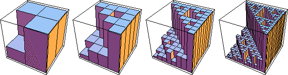

| The probabilities of applying each transformation represent the fraction of the
total number of iterates in the region determined by the transformation. |
| With the IFS and probabilities of the last example,
in a typical picture about 0.1 of the points will lie in the square with address 1,
and about 0.3 of the points will
lie in each of the squares with address 2, 3, and 4. |
| Arguing in the same way, about
0.01 = 0.1⋅0.1 of the points will lie in the square with address 11, about
0.03 = 0.1⋅0.3 of the points will lie in the square with address 12, and so
on. |
|
| Higher iterates are easier to understand visually. |
| Here we show the
first four generations, with the height of the box in a region representing the fraction
of the points in that region. |
| All the pictures have been adjusted to have the same height,
whereas square 4 has 0.3 of the points, square 44 has 0.09 of the points, square 444 has
0.027 of the points, and so on. |
|  |
| We assume a power law scaling for the probability of regions having
addresses i, ij, ijk, ... . |
| Prob(i) scales as (1/2)α(i) |
| Prob(ij) scales as (1/4)α(ij) |
| Prob(ijk) scales as (1/8)α(ijk) |
| and so on |
|
| The exponents α(ijk) are coarse Holder exponents. They are
easily computed from the probabilities: |
| α(i1 ... in) =
Log(Prob(i1 ... in))/Log(2-n) |
| For this example, the length 2 addresses have probabilities .01, .03, and .09. The
corresponding coarse Holder exponents are |
| Log(.01)/Log(.25) ≈ 3.32,
Log(.03)/Log(.25) ≈ 2.53,
and Log(.09)/Log(.25) ≈ 1.74 |
| Note the smaller probability gives the larger Holder exponent. |